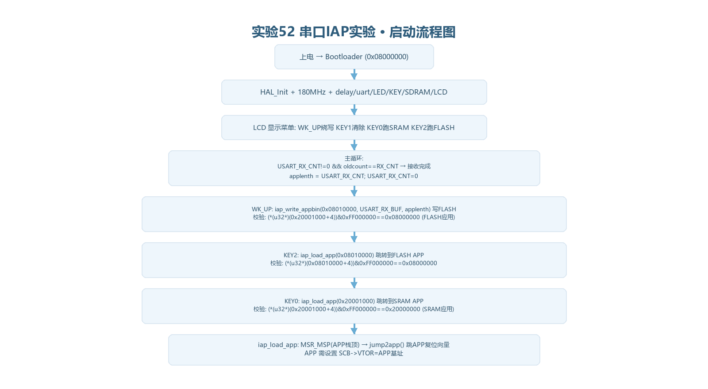
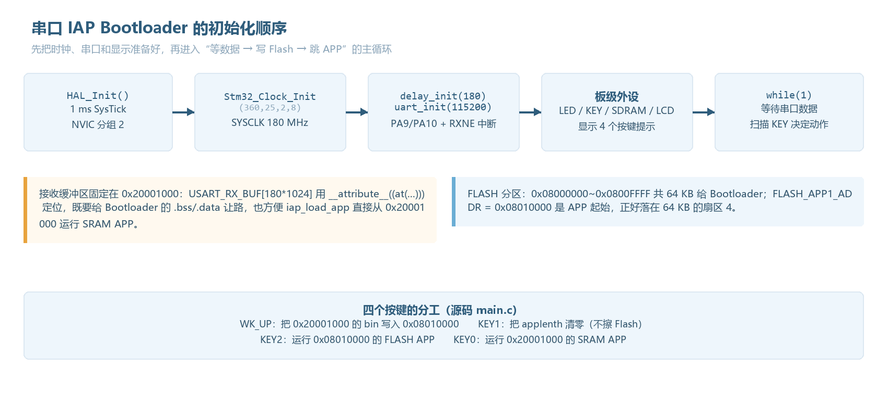
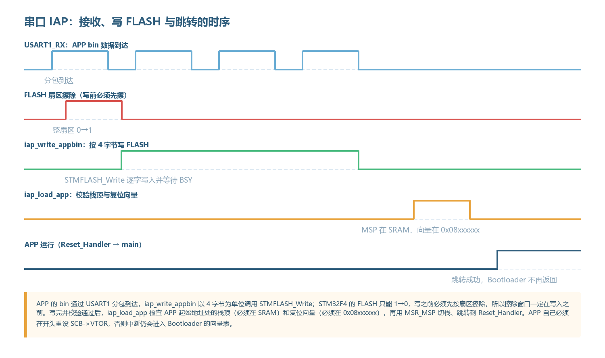
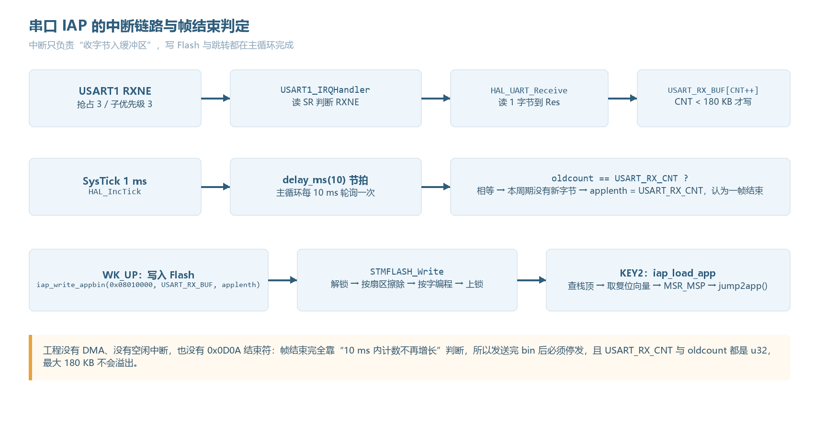
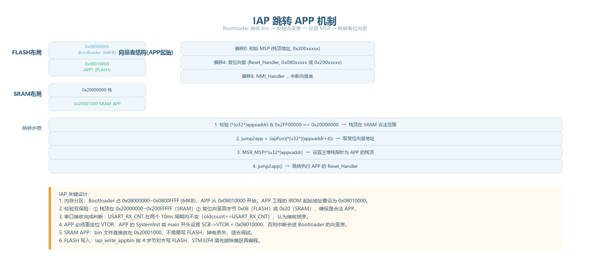

01 实验目标与 Flash 分区
实验52 做的是最朴素的串口 IAP：板子上先烧一个 Bootloader，它初始化串口并把收到的字节原样存进 RAM；用户按 WK_UP 后，Bootloader 把这段数据按 4 字节打包写进内部 Flash 的 0x08010000；再按 KEY2，Bootloader 校验 APP 的栈顶与复位向量，设置 MSP 后跳过去执行。整个过程不依赖调试器，也不需要把板子接回电脑重新烧录。
本实验提供三个工程：IAP Bootloader V1.0 是常驻程序；实验16 RTC实验_FLASH APP版本 编译到 0x08010000，用来验证“写 Flash + 跳转”；实验30 触摸屏实验_SRAM APP版本 编译到 0x20001000，用来验证“SRAM 里直接跑”。三者共用同一套串口接收与跳转代码。
| 区域 | 地址范围 | 大小 | 用途 |
|---|---|---|---|
| Bootloader | 0x08000000 ~ 0x0800FFFF | 64 KB | 本实验的 IAP 程序，含向量表 |
| FLASH APP | 0x08010000 起 | 视 bin 大小 | FLASH_APP1_ADDR，扇区 4（64 KB） |
| SRAM APP | 0x20001000 起 | ≤ 180 KB | 与 USART_RX_BUF 同一块地址，下载后可直接运行 |
| 接收缓冲区 | 0x20001000 | 180×1024 B | USART_RX_BUF，用 at 属性固定 |
| 系统时钟 | — | 180 MHz | Stm32_Clock_Init(360,25,2,8) |
| 串口 | PA9 / PA10 | 115200-8-N-1 | 接收 bin、打印进度 |
0x08010000 开始且是 64 KB。APP 从扇区 4 起写，擦除时不会碰到 Bootloader。02 目录与文件分工
| 文件 | 职责 | 关键符号 |
|---|---|---|
USER/main.c | 界面、按键分发、帧结束判定 | applenth、oldcount、clearflag |
IAP/iap.c | 字节流 → 32 位字 → Flash；跳转 APP | iap_write_appbin、iap_load_app |
IAP/iap.h | APP 起始地址与函数指针类型 | FLASH_APP1_ADDR、iapfun |
HARDWARE/STMFLASH/stmflash.c | 内部 Flash 扇区擦除与按字编程 | STMFLASH_Write、STMFLASH_GetFlashSector |
SYSTEM/usart/usart.c | USART1 初始化、RXNE 中断、1 字节接收 | USART_RX_BUF、USART_RX_CNT |
SYSTEM/sys/sys.c | 180 MHz 时钟、MSR_MSP | Stm32_Clock_Init |
SYSTEM/delay/delay.c | SysTick 微秒/毫秒延时 | delay_init、delay_ms |
CORE/startup_stm32f429xx.s | Bootloader 自己的向量表与复位入口 | __initial_sp、Reset_Handler |
注意 iap.c 只做“搬运”，不负责“什么时候搬”；main.c 只做“什么时候搬”，不碰 Flash 寄存器。这种分层让 Bootloader 的主循环很容易读：看到 applenth 就说明收到了一帧，看到按键就决定写、清、跳。
03 启动流程总览

启动阶段与普通工程一致：HAL_Init 建立时基，Stm32_Clock_Init 把主频抬到 180 MHz，随后初始化串口、LED、按键、SDRAM 与 LCD。区别在于进入 while(1) 后没有“业务”，只有“收数据、判帧、等按键”。
int main(void)
{
u8 t;
u8 key;
u16 oldcount = 0; // 上一周期的接收计数
u32 applenth = 0; // 本帧 bin 的字节数
u8 clearflag = 0; // 提示信息延时清除计数
HAL_Init(); // 时基、NVIC 分组、Cache
Stm32_Clock_Init(360,25,2,8); // 180 MHz
delay_init(180); // fac_us = 180
uart_init(115200); // PA9/PA10，开 RXNE 中断
LED_Init();
KEY_Init();
SDRAM_Init(); // LCD 显存需要外部 SDRAM
LCD_Init();
LCD_ShowString(30,50,200,16,16,"Apollo STM32F4/F7");
LCD_ShowString(30,70,200,16,16,"FLASH EEPROM TEST");
LCD_ShowString(30,130,200,16,16,"KEY_UP:Copy APP2FLASH");
LCD_ShowString(30,150,200,16,16,"KEY1:Erase SRAM APP");
LCD_ShowString(30,170,200,16,16,"KEY0:Run SRAM APP");
LCD_ShowString(30,190,200,16,16,"KEY2:Run FLASH APP");
while (1)
{
if (USART_RX_CNT) // 收到过数据
{
if (oldcount == USART_RX_CNT) // 10 ms 内计数没变：本帧结束
{
applenth = USART_RX_CNT; // 记录 bin 长度
oldcount = 0;
USART_RX_CNT = 0; // 计数清零，准备下一帧
printf("用户程序接收完成!\r\n");
printf("代码长度:%dBytes\r\n",applenth);
}
else oldcount = USART_RX_CNT; // 还在收，继续等
}
t++;
delay_ms(10); // 判帧周期就是 10 ms
if (t == 30)
{
t = 0;
LED0 = !LED0; // 约 300 ms 心跳
if (clearflag)
{
clearflag--;
if (clearflag == 0) LCD_Fill(30,210,240,210+16,WHITE);
}
}
key = KEY_Scan(0); // 四个按键的入口
// …省略 WK_UP/KEY1/KEY2/KEY0 分支，见第 10 节…
}
}
- 为什么用“计数不变”判帧：串口没有包长、没有结束符，Bootloader 只能假设“发送方停发超过一个 10 ms 周期”就是一帧结束。因此上位机发完 bin 必须停止发送，否则帧边界会被推迟。
- oldcount 的类型：它是
u16，而USART_RX_CNT是u32。本实验 bin 远小于 64 KB 时没问题，但严格来说超过 65535 字节会截断比较；这是源码的真实类型。 - applenth 不清零：收到一帧后
applenth保留，所以可以反复按 WK_UP 重写同一份数据，直到按 KEY1 把它清零。 - clearflag 的作用：每次操作后置 7，30 次心跳（约 2.1 s）后清除第 210 行的提示文字，不需要额外定时器。
- LCD 提示是调试窗口：“Copy APP Successed”“Illegal FLASH APP”这些字符串能直接告诉你走到了哪个分支，比只看串口更直观。
04 启动文件与向量表
Bootloader 与普通工程使用同一份 startup_stm32f429xx.s：栈 1 KB、堆 512 B，向量表第 0 项 __initial_sp、第 1 项 Reset_Handler。区别在于 Bootloader 的 SystemInit 里 VECT_TAB_OFFSET 是 0x00，所以 VTOR 指向 0x08000000。
Stack_Size EQU 0x400; // Bootloader 主栈 1 KB AREA STACK, NOINIT, READWRITE, ALIGN=3 __initial_sp // APP 跳转时会用 APP 的栈顶覆盖 MSP Heap_Size EQU 0x200; AREA HEAP, NOINIT, READWRITE, ALIGN=3 __heap_base AREA RESET, DATA, READONLY DCD __initial_sp // 0x08000000 DCD Reset_Handler // 0x08000004 DCD NMI_Handler DCD HardFault_Handler // …其余向量… Reset_Handler PROC LDR R0, =SystemInit BLX R0 // 先 SystemInit（VTOR=0x08000000） LDR R0, =__main BX R0 // 再 C 库初始化并进 main ENDP
- Bootloader 的向量表不能搬：它必须留在 0x08000000，因为复位时内核固定从那里取 MSP 和 PC；这也是 APP 必须从 0x08010000 起、且自己设 VTOR 的原因。
- 栈顶会被覆盖：
iap_load_app执行MSR_MSP(*(vu32*)appxaddr)后，MSP 变成 APP 的栈顶；Bootloader 的 1 KB 栈不再使用。 - APP 的向量表：FLASH APP 在
main开头执行SCB->VTOR = FLASH_BASE | 0x10000；SRAM APP 执行SCB->VTOR = SRAM_BASE | 0x1000。这两行是 APP 工程里真实存在的，不是 Bootloader 做的。 - 为什么 APP 要抢在 HAL_Init 前设 VTOR：只要在设 VTOR 之前发生中断，内核仍会去 0x08000000 取 Bootloader 的处理函数，可能访问不存在的对象。
- WEAK 向量：Bootloader 里没有用到的中断都落在默认死循环；APP 覆盖自己的向量表后，用的是 APP 自己的处理函数。
05 SystemInit 与 HAL_Init
SystemInit 只做“归零 + 开 FPU + 设 VTOR”，PLL 仍在 Stm32_Clock_Init 里配置。对 IAP 来说，FPU 不是重点，VTOR 与 Flash 等待周期才是：擦写 Flash 时 CPU 取指会暂停，等待周期设错会直接取指异常。
void SystemInit(void)
{
#if (__FPU_PRESENT == 1) && (__FPU_USED == 1)
SCB->CPACR |= ((3UL << 10*2)|(3UL << 11*2)); // 开 FPU
#endif
RCC->CR |= (uint32_t)0x00000001;
RCC->CFGR = 0x00000000;
RCC->CR &= (uint32_t)0xFEF6FFFF; // 关 HSE/PLL
RCC->PLLCFGR = 0x24003010;
RCC->CIR = 0x00000000;
SCB->VTOR = FLASH_BASE | VECT_TAB_OFFSET; // Bootloader：偏移 0x00
}
HAL_Init 打开指令/数据 Cache 与预取，把 NVIC 分成 2 位抢占 + 2 位子优先级，并用 HAL_InitTick 建立 1 ms SysTick。Flash 编程函数里的 FLASH_WaitForLastOperation(50000) 就是靠这个时基做超时。
HAL_StatusTypeDef HAL_Init(void)
{
__HAL_FLASH_INSTRUCTION_CACHE_ENABLE(); // I-Cache
__HAL_FLASH_DATA_CACHE_ENABLE(); // D-Cache
__HAL_FLASH_PREFETCH_BUFFER_ENABLE(); // 预取
HAL_NVIC_SetPriorityGrouping(NVIC_PRIORITYGROUP_2);
HAL_InitTick(TICK_INT_PRIORITY); // 1 ms
HAL_MspInit();
return HAL_OK;
}
__weak HAL_StatusTypeDef HAL_InitTick(uint32_t TickPriority)
{
HAL_SYSTICK_Config(HAL_RCC_GetHCLKFreq()/1000);
HAL_NVIC_SetPriority(SysTick_IRQn, TickPriority, 0);
return HAL_OK;
}
- Cache 与 Flash 编程：写 Flash 前不需要手动关 Cache；但擦除期间 CPU 从 Flash 取指会被硬件暂停，靠 5 个等待周期保证时序。
- HAL_InitTick 的时机：第一次调用发生在 16 MHz HSI 下，装的是 16000；
Stm32_Clock_Init改完 PLL 后 HAL 会按新 HCLK 重新装 SysTick。 - 优先级分组 2：串口中断配置为 3/3，正好落在 2 位抢占 + 2 位子优先级的范围内；如果改成分组 4，3/3 的“子优先级 3”就没有意义了。
- 超时值 50000：
FLASH_WaitForLastOperation(FLASH_WAITETIME)的实参是 50000 ms，足够覆盖 64 KB 扇区擦除（典型几百毫秒到数秒）。 - Bootloader 不关中断：
HAL_Init之后 SysTick 一直在跑，这一点在跳转 APP 时会带来一个时间窗口，详见第 11 节。
06 时钟树与延时
Stm32_Clock_Init(360,25,2,8)：25 MHz 晶振先被 25 分频得到 1 MHz 比较频率，再乘 360 得到 360 MHz VCO，2 分频得到 180 MHz SYSCLK。APB1 4 分频为 45 MHz，APB2 2 分频为 90 MHz，PLLQ=8 得到 45 MHz（本实验不用 USB）。
| 项目 | 算式 | 结果 |
|---|---|---|
| PLL 比较频率 | 25 MHz / 25 | 1 MHz |
| VCO | 1 MHz × 360 | 360 MHz |
| SYSCLK / HCLK | 360 / 2 | 180 MHz |
| PCLK1 | 180 / 4 | 45 MHz |
| PCLK2 | 180 / 2 | 90 MHz |
| Flash 等待 | FLASH_LATENCY_5 | 5 WS |
void Stm32_Clock_Init(u32 plln,u32 pllm,u32 pllp,u32 pllq)
{
RCC_OscInitTypeDef RCC_OscInitStructure;
RCC_ClkInitTypeDef RCC_ClkInitStructure;
__HAL_RCC_PWR_CLK_ENABLE();
__HAL_PWR_VOLTAGESCALING_CONFIG(PWR_REGULATOR_VOLTAGE_SCALE1); // 180 MHz 必须 Scale1
RCC_OscInitStructure.OscillatorType = RCC_OSCILLATORTYPE_HSE;
RCC_OscInitStructure.HSEState = RCC_HSE_ON;
RCC_OscInitStructure.PLL.PLLState = RCC_PLL_ON;
RCC_OscInitStructure.PLL.PLLSource = RCC_PLLSOURCE_HSE;
RCC_OscInitStructure.PLL.PLLM = pllm; // 25
RCC_OscInitStructure.PLL.PLLN = plln; // 360
RCC_OscInitStructure.PLL.PLLP = pllp; // 2
RCC_OscInitStructure.PLL.PLLQ = pllq; // 8
HAL_RCC_OscConfig(&RCC_OscInitStructure);
HAL_PWREx_EnableOverDrive(); // F429 跑 180 MHz 必须开
RCC_ClkInitStructure.ClockType = RCC_CLOCKTYPE_SYSCLK | RCC_CLOCKTYPE_HCLK
| RCC_CLOCKTYPE_PCLK1 | RCC_CLOCKTYPE_PCLK2;
RCC_ClkInitStructure.SYSCLKSource = RCC_SYSCLKSOURCE_PLLCLK;
RCC_ClkInitStructure.AHBCLKDivider = RCC_SYSCLK_DIV1;
RCC_ClkInitStructure.APB1CLKDivider = RCC_HCLK_DIV4;
RCC_ClkInitStructure.APB2CLKDivider = RCC_HCLK_DIV2;
HAL_RCC_ClockConfig(&RCC_ClkInitStructure, FLASH_LATENCY_5);
}
delay_init(180) 把 fac_us 设为 180，delay_ms 内部按 nms×1000 调用 delay_us。它用 SysTick->VAL 轮询，不依赖中断，因此在擦除 Flash 导致中断响应变慢时依然能计时（但擦除期间 CPU 本身会被暂停，延时会相应变长）。
void delay_init(u8 SYSCLK)
{
HAL_SYSTICK_CLKSourceConfig(SYSTICK_CLKSOURCE_HCLK); // 计数时钟 = HCLK
fac_us = SYSCLK; // 180
}
void delay_us(u32 nus)
{
u32 ticks = nus * fac_us;
u32 told = SysTick->VAL;
u32 tnow,tcnt = 0;
u32 reload = SysTick->LOAD;
while (1)
{
tnow = SysTick->VAL;
if (tnow != told)
{
if (tnow < told) tcnt += told - tnow;
else tcnt += reload - tnow + told;
told = tnow;
if (tcnt >= ticks) break;
}
}
}
- 为什么 IAP 也关心时钟：串口 115200 的 BRR 由 PCLK2 计算；如果时钟还是 16 MHz，实际波特率会偏，接收 bin 会出错。
- OverDrive 的代价：进入 Over-Drive 需要先切回 HSI 并等待 ODSWRDY，启动会慢几毫秒；这是 180 MHz 的必要成本。
- Flash 5 WS 与编程：擦除/编程时 CPU 取指被暂停，等待周期只影响正常取指；不要在 Flash 编程期间执行 Flash 里的代码（本工程由硬件自动停顿）。
- delay 的精度：180 MHz 下 1 us ≈ 180 个 HCLK；
delay_us(1)的误差主要来自进入函数与读 VAL 的开销，适合毫秒级轮询，不适合精确波形。 - PLLQ=8：得到 45 MHz，本实验不用 USB/SDIO，所以没有问题；若后续要加 USB，需要重新选 PLLN/PLLQ 让 PLLQ 输出 48 MHz。
07 串口与 Flash 初始化

uart_init 只负责填 UART_HandleTypeDef，GPIO/时钟/NVIC 都在 HAL_UART_MspInit 中完成。注意这里没有调用 HAL_UART_Receive_IT，而是直接在 ISR 里调用 HAL_UART_Receive(...,1,...)，所以必须手动开 UART_IT_RXNE。
void uart_init(u32 bound)
{
UART1_Handler.Instance = USART1;
UART1_Handler.Init.BaudRate = bound; // 115200
UART1_Handler.Init.WordLength = UART_WORDLENGTH_8B;
UART1_Handler.Init.StopBits = UART_STOPBITS_1;
UART1_Handler.Init.Parity = UART_PARITY_NONE;
UART1_Handler.Init.HwFlowCtl = UART_HWCONTROL_NONE;
UART1_Handler.Init.Mode = UART_MODE_TX_RX;
HAL_UART_Init(&UART1_Handler); // 触发 MspInit
}
void HAL_UART_MspInit(UART_HandleTypeDef *huart)
{
GPIO_InitTypeDef GPIO_Initure;
if (huart->Instance == USART1)
{
__HAL_RCC_GPIOA_CLK_ENABLE();
__HAL_RCC_USART1_CLK_ENABLE();
GPIO_Initure.Pin = GPIO_PIN_9; // TX
GPIO_Initure.Mode = GPIO_MODE_AF_PP;
GPIO_Initure.Pull = GPIO_PULLUP;
GPIO_Initure.Speed = GPIO_SPEED_FAST;
GPIO_Initure.Alternate = GPIO_AF7_USART1;
HAL_GPIO_Init(GPIOA,&GPIO_Initure);
GPIO_Initure.Pin = GPIO_PIN_10; // RX
HAL_GPIO_Init(GPIOA,&GPIO_Initure);
__HAL_UART_DISABLE_IT(huart,UART_IT_TC); // 不用发送完成中断
__HAL_UART_ENABLE_IT(huart,UART_IT_RXNE); // 只要接收中断
HAL_NVIC_EnableIRQ(USART1_IRQn);
HAL_NVIC_SetPriority(USART1_IRQn,3,3); // 抢占 3 / 子 3
}
}
Flash 侧没有“初始化函数”，只有擦除/编程时的解锁与上锁。STMFLASH_Write 先检查地址是否 4 字节对齐，再解锁；如果目标区域不是全 0xFFFFFFFF，它会先按扇区擦除，然后逐字编程，最后上锁。
void STMFLASH_Write(u32 WriteAddr,u32 *pBuffer,u32 NumToWrite)
{
FLASH_EraseInitTypeDef FlashEraseInit;
u32 SectorError = 0;
u32 addrx = WriteAddr;
u32 endaddr = WriteAddr + NumToWrite*4;
if (WriteAddr < STM32_FLASH_BASE || WriteAddr % 4) return; // 非法地址直接退出
HAL_FLASH_Unlock(); // 解锁控制寄存器
while (addrx < endaddr) // 先擦除所有非 0xFFFFFFFF 的扇区
{
if (STMFLASH_ReadWord(addrx) != 0XFFFFFFFF)
{
FlashEraseInit.TypeErase = FLASH_TYPEERASE_SECTORS;
FlashEraseInit.Sector = STMFLASH_GetFlashSector(addrx); // 0x08010000 → 扇区 4
FlashEraseInit.NbSectors = 1;
FlashEraseInit.VoltageRange = FLASH_VOLTAGE_RANGE_3;
if (HAL_FLASHEx_Erase(&FlashEraseInit,&SectorError) != HAL_OK) break;
}
else addrx += 4;
FLASH_WaitForLastOperation(FLASH_WAITETIME); // 50000 ms 超时
}
while (WriteAddr < endaddr) // 再按字编程
{
if (HAL_FLASH_Program(FLASH_TYPEPROGRAM_WORD,WriteAddr,*pBuffer) != HAL_OK) break;
WriteAddr += 4;
pBuffer++;
}
HAL_FLASH_Lock(); // 上锁，防止误写
}
- 为什么先擦后写：STM32F4 的 Flash 只能把 1 写成 0，不能把 0 写回 1；所以只要目标位置不是 0xFFFFFFFF，就必须整扇区擦除。扇区 4 是 64 KB，一擦就是 64 KB。
- 擦除会波及 APP 后面的数据：
STMFLASH_Write的注释明确说“不保存扇区数据”，若 APP 跨越多个扇区，后一扇区的旧内容会被保留但前一扇区会被整块清掉；更新固件时通常从 APP 起始地址连续写。 - 地址校验：
WriteAddr%4防止非对齐写入；HAL_FLASH_Program按字编程，地址不对齐会直接报错。 - 解锁/上锁成对：解锁后如果中途
break，最后仍会执行HAL_FLASH_Lock；这是源码的控制流保证。 - 读 Flash 不需要解锁：
STMFLASH_ReadWord只是把地址强转成指针读取，任何时候都能读。
08 固件接收与写入时序

iap_write_appbin 的第一个循环按 4 字节把 USART_RX_BUF 拼成一个 32 位字：注意它是小端重组（dfu[3]<<24 | dfu[2]<<16 | dfu[1]<<8 | dfu[0]），因为 bin 文件本身是小端字节流。每凑满 512 个字（2 KB）调用一次 STMFLASH_Write，最后把不足 2 KB 的尾巴再写一次。
u32 iapbuf[512]; // 512 个字 = 2 KB 缓存 void iap_write_appbin(u32 appxaddr,u8 *appbuf,u32 appsize) { u32 t; u16 i = 0; u32 temp; u32 fwaddr = appxaddr; // 当前写入地址，初值 0x08010000 u8 *dfu = appbuf; // 指向 USART_RX_BUF for (t = 0; t < appsize; t += 4) { temp = (u32)dfu[3] << 24; // 小端重组 temp |= (u32)dfu[2] << 16; temp |= (u32)dfu[1] << 8; temp |= (u32)dfu[0]; dfu += 4; iapbuf[i++] = temp; if (i == 512) // 满 2 KB { i = 0; STMFLASH_Write(fwaddr,iapbuf,512); fwaddr += 2048; // 512×4 } } if (i) STMFLASH_Write(fwaddr,iapbuf,i); // 写入尾部 }
- 为什么按 4 字节：F4 的 Flash 编程最小单位是字节/半字/字，但本工程选择字编程；4 字节对齐也与
STMFLASH_Write的地址校验一致。 - appsize 不是 4 的倍数怎么办：循环按 4 递增，最后一次可能读到
dfu[3]越界的 1~3 个字节；源码没有对 appsize 做 4 字节向上取整，依赖 bin 文件本身按字对齐（编译器生成的一般是 4 字节对齐）。 - 2 KB 缓存的意义：不是性能优化，而是把“串口字节流”转换成“Flash 字数组”的中间层；没有它就得每 4 字节调用一次擦写函数，扇区判断会非常频繁。
- 擦除发生在第一次写：第一次
STMFLASH_Write发现0x08010000不是 0xFFFFFFFF，就擦除整个扇区 4；后面 2 KB 一批的写入都不会再擦，因为已经是全 FF。 - 写失败不回报：
iap_write_appbin没有返回值，STMFLASH_Write内部也只是break；所以 LCD 上的“Copy APP Successed”只代表函数返回，不代表每个字都写成功。调试时应回读校验。
09 中断链路

| 触发源 | 寄存器/标志 | NVIC | ISR | 做的事 |
|---|---|---|---|---|
| USART1 收到 1 字节 | SR.RXNE | USART1_IRQn，3/3 | USART1_IRQHandler | 读 1 字节存入 USART_RX_BUF[CNT++] |
| SysTick 每 1 ms | SysTick COUNTFLAG | SysTick_IRQn | SysTick_Handler | HAL_IncTick() |
| 串口错误 | ORE/NE/FE/PE | 同上 | HAL_UART_IRQHandler | 清错误标志 |
| Flash 操作完成 | BSY/EOP | 不触发中断 | — | 轮询 FLASH_WaitForLastOperation |
u8 USART_RX_BUF[USART_REC_LEN] __attribute__ ((at(0X20001000))); // 固定地址 u16 USART_RX_STA = 0; // 本工程主流程未使用 u32 USART_RX_CNT = 0; // 实际使用的字节计数 u8 aRxBuffer[RXBUFFERSIZE]; // RXBUFFERSIZE = 1 void USART1_IRQHandler(void) { u8 Res; if (__HAL_UART_GET_FLAG(&UART1_Handler,UART_FLAG_RXNE) != RESET) // 收到数据 { HAL_UART_Receive(&UART1_Handler,&Res,1,1000); // 读 1 字节，清 RXNE if (USART_RX_CNT < USART_REC_LEN) // 缓冲区没满 { USART_RX_BUF[USART_RX_CNT] = Res; USART_RX_CNT++; // 计数递增 } } HAL_UART_IRQHandler(&UART1_Handler); // 处理错误标志 }
- 为什么是 1 字节：
HAL_UART_Receive(...,1,1000)每次只取一个字节，处理简单、不会长时间占用中断；代价是每个字节一次中断，115200 下约 11.5k 次/秒。 - 接收上限 180 KB：
USART_REC_LEN = 180*1024，CNT到上限后不再写入，超出的字节被静默丢弃；此时帧长度会停在 184320。 - 两种状态变量：
USART_RX_STA是为 0x0D0A 协议保留的，但本工程的主循环用的是USART_RX_CNT；读代码时不要误以为它按回车换行结束。 - 没有 DMA：所以接收大文件时 CPU 中断负载很高，但实现简单、不会出现 DMA 传输长度与擦除时序冲突。
- 错误标志：ORE 溢出会丢字节，最终 bin 长度可能仍然“看起来正常”但内容缺失；量产 IAP 应加 CRC 校验，本实验没有。
10 主循环与四个按键
key = KEY_Scan(0); if (key == WKUP_PRES) // 把 RAM 里的 bin 写进 Flash { if (applenth) { printf("开始更新固件...\r\n"); if (((*(vu32*)(0X20001000+4)) & 0xFF000000) == 0x08000000) // 复位向量在 Flash { iap_write_appbin(FLASH_APP1_ADDR,USART_RX_BUF,applenth); LCD_ShowString(30,210,200,16,16,"Copy APP Successed!!"); } else { LCD_ShowString(30,210,200,16,16,"Illegal FLASH APP! "); } } clearflag = 7; } if (key == KEY1_PRES) // 注意：只清 applenth，不擦 Flash { if (applenth) { printf("固件清除完成!\r\n"); LCD_ShowString(30,210,200,16,16,"APP Erase Successed!"); applenth = 0; } clearflag = 7; } if (key == KEY2_PRES) // 运行 Flash APP { if (((*(vu32*)(FLASH_APP1_ADDR+4)) & 0xFF000000) == 0x08000000) { iap_load_app(FLASH_APP1_ADDR); } else LCD_ShowString(30,210,200,16,16,"Illegal FLASH APP!"); clearflag = 7; } if (key == KEY0_PRES) // 运行 SRAM APP { if (((*(vu32*)(0X20001000+4)) & 0xFF000000) == 0x20000000) { iap_load_app(0X20001000); } else LCD_ShowString(30,210,200,16,16,"Illegal SRAM APP!"); clearflag = 7; }
- 写之前先看复位向量：
0x20001004是 APP 的第 2 个字，也就是 Reset_Handler。只有它的高 8 位是 0x08，才说明这是一份要跑在 Flash 里的程序；否则拒绝写入，避免把 SRAM 程序写进 Flash。 - KEY1 名不副实：它只把
applenth清零并显示“Erase Successed”，并没有调用擦除函数；Flash 里的旧 APP 仍在，只是 Bootloader 不再认为有可写的固件。想看真正擦除，要按 WK_UP 触发写入时的扇区擦除。 - KEY2 与 KEY0 的差别：KEY2 跳
0x08010000，要求复位向量高 8 位为 0x08；KEY0 跳0x20001000，要求为 0x20。两者都只检查第 2 个字，不检查栈顶。 - applenth 为 0 时：WK_UP 和 KEY1 都会打印“没有可以更新的固件”，不会误擦 Flash；这是最简单的保护。
- 跳转后不返回：
iap_load_app一旦成功，Bootloader 的while(1)就不再执行；只有复位或 APP 主动跳回才会重新进入 Bootloader。
| 按键 | 前置条件 | 动作 | 屏幕提示 |
|---|---|---|---|
| WK_UP | applenth != 0 且 0x20001004 高 8 位为 0x08 | iap_write_appbin(0x08010000,...) | Copy APP Successed!! |
| KEY1 | applenth != 0 | applenth = 0（不擦 Flash） | APP Erase Successed! |
| KEY2 | 0x08010004 高 8 位为 0x08 | iap_load_app(0x08010000) | 无（跳走） |
| KEY0 | 0x20001004 高 8 位为 0x20 | iap_load_app(0x20001000) | 无（跳走） |
11 APP 跳转机制

iap_load_app 只有 6 行，但每一行都有含义：先检查 APP 起始地址处的第一个字（栈顶）是否落在 SRAM 的合法范围，再把第二个字（Reset_Handler）取成函数指针，接着用 MSR_MSP 把 MSP 切到 APP 的栈顶，最后调用函数指针。注意它没有关中断、没有改 VTOR、也没有复位外设。
typedef void (*iapfun)(void);
void iap_load_app(u32 appxaddr)
{
if (((*(vu32*)appxaddr) & 0x2FF00000) == 0x20000000) // 栈顶必须在 SRAM
{
jump2app = (iapfun)*(vu32*)(appxaddr+4); // 取 Reset_Handler
MSR_MSP(*(vu32*)appxaddr); // MSP = APP 栈顶
jump2app(); // 跳过去，不返回
}
}
MSR_MSP 是 sys.c 里的汇编函数，只有两条指令：把参数写入 MSP，然后返回。它不保存旧 MSP，也不切换 PSP，所以调用前 Bootloader 自己的局部变量必须已经不再使用——这也是 iap_load_app 写成“最后一步”的原因。
__asm void MSR_MSP(u32 addr)
{
MSR MSP, r0 // 直接把 r0 写入主栈指针
BX r14 // 返回
}
关于“关中断”，必须如实说明：本实验的 iap_load_app 没有关中断，也没有关 SysTick。跳转发生时 Bootloader 的 SysTick 仍在运行，若在 APP 执行 SCB->VTOR 之前发生中断，内核会按 Bootloader 的向量表取处理函数。源码没有处理这个窗口，属于可改进点，下面的写法是建议而不是现有代码：
// 建议（源码未实现）：跳转前关闭总中断与 SysTick __disable_irq(); // 关全局中断，避免跳转窗口被打断 SysTick->CTRL = 0; // 停掉 Bootloader 的 SysTick SCB->ICSR = SCB_ICSR_PENDSTCLR_Msk; // 清掉挂起的 SysTick MSR_MSP(*(vu32*)appxaddr); jump2app(); // APP 在自己的 main 里重新开中断与 SysTick
- 跳转地址：FLASH APP 是
0x08010000，SRAM APP 是0x20001000；这两个地址必须与 APP 工程的 IROM1/IRAM1 起始地址完全一致，否则取到的“栈顶/复位向量”不是 APP 的。 - 栈顶检查的掩码：
&0x2FF00000 == 0x20000000只保留 bit29 与 bit20~23 附近的位，实际接受0x200xxxxx/0x201xxxxx。它不检查栈顶是否 8 字节对齐，也不检查是否越界到 CCM。 - 为什么先取向量再改 MSP：读
appxaddr+4用的是 Bootloader 的栈和寄存器；一旦MSR_MSP执行，原来的局部变量就“悬空”了，所以顺序不能反。 - VTOR 由 APP 负责：Bootloader 不改 VTOR；FLASH APP 在
main第一行写SCB->VTOR = FLASH_BASE | 0x10000，SRAM APP 写SRAM_BASE | 0x1000。如果 APP 忘了这行，中断会跑回 Bootloader 的向量表。 - 没有关中断的实际风险：跳转到 APP 的
main之前有几十条指令的窗口；如果 SysTick 恰好在这时触发，会执行 Bootloader 的HAL_IncTick。多数情况下只是多一次 tick，但若 Bootloader 开了其它中断（本工程只开了 USART1 RXNE），就可能访问已失效的缓冲区。 - 跳转不是复位：外设寄存器保持 Bootloader 配置（串口、GPIO、SysTick），APP 必须自己重新初始化；APP 的
HAL_Init/Stm32_Clock_Init会重配时钟，但不会自动清掉串口中断使能。
12 串口日志与调试
Bootloader 的日志不追求实时性，fputc 等 TXE 后写 DR 即可。发送期间接收中断仍能打断 printf，所以不会因为打印而丢接收字节（只要中断优先级允许）。
#pragma import(__use_no_semihosting)
struct __FILE { int handle; };
FILE __stdout;
void _sys_exit(int x) { x = x; }
int fputc(int ch, FILE *f)
{
while ((USART1->SR & 0X40) == 0); // 等 TXE
USART1->DR = (u8)ch; // 写 DR 发送
return ch;
}
串口侧的关键日志有四处：用户程序接收完成!（帧结束）、代码长度:%dBytes（applenth）、开始更新固件...（WK_UP 分支）、固件更新完成!（iap_write_appbin 返回）。跳转前还会打印 开始执行FLASH用户代码!! 或 开始执行SRAM用户代码!!。
printf("用户程序接收完成!\r\n");
printf("代码长度:%dBytes\r\n",applenth);
printf("开始更新固件...\r\n");
iap_write_appbin(FLASH_APP1_ADDR,USART_RX_BUF,applenth);
printf("固件更新完成!\r\n");
printf("开始执行FLASH用户代码!!\r\n");
iap_load_app(FLASH_APP1_ADDR);
- 日志与 LCD 双通道：LCD 显示当前动作，串口打印长度与结果；调试时以串口长度为准，因为 LCD 可能被后续提示覆盖。
- “接收完成”只代表停发：它不校验内容，CRC/长度校验都没有；如果发送过程中恰好停顿超过 10 ms，会被误判为两帧。
- printf 阻塞的影响：115200 下打印 30 个字符约 2.6 ms，会推迟下一次
KEY_Scan，但不会影响已经进入缓冲区的串口数据。 - 半主机模式：不禁用半主机时，脱机运行
printf可能卡死；这里用__use_no_semihosting+ 自定义fputc避免。 - 跳转后日志中断：
iap_load_app不返回，所以跳转后的 printf 不会执行；要看 APP 的输出，得让 APP 自己初始化串口并打印。
13 关键逻辑复盘与排查
| 现象 | 原因 | 排查 |
|---|---|---|
| 串口一直收不到“接收完成” | 发送方没有停发，或 oldcount 比较被 u16 截断 | 发完后停 50 ms；确认 bin 小于 64 KB |
| WK_UP 提示 Illegal FLASH APP | 0x20001004 的高 8 位不是 0x08 | 确认发的是 Flash APP 的 bin，不是 SRAM APP |
| KEY2 跳过去就 HardFault | APP 起始地址不是 0x08010000，或 APP 没设 VTOR | 查 APP 的 IROM1 与 SCB->VTOR |
| APP 能跑但中断不响应 | VTOR 仍指向 Bootloader | 在 APP main 第一行设 FLASH_BASE|0x10000 |
| 更新后旧 APP 的一部分还在 | 新 bin 比旧 bin 短，后面的扇区没被擦 | 先整片擦除 APP 区，或按扇区写入 |
| 写 Flash 返回但内容不对 | appsize 不是 4 的倍数，尾部读了越界字节 | 回读校验；确保 bin 4 字节对齐 |
| KEY1 后还能按 KEY2 运行 | KEY1 只清 applenth，不擦 Flash | 这是源码行为，不是 bug |
- 地址是第一优先级：Bootloader 的
FLASH_APP1_ADDR、APP 的 IROM1 起始、APP 的 VTOR 偏移，三者必须完全一致；任何一处不同都会“跳过去但跑飞”。 - 长度是第二优先级：
applenth来自USART_RX_CNT，如果多收了几个字节（比如串口工具自动加回车），这些字节也会被写进 Flash，通常不影响运行但会污染末尾。 - 栈顶检查不等于全部校验：它只验证高 4 位，不能发现 bin 损坏；量产应加 CRC32 与版本号。
- 擦除范围要心里有数：扇区 4 是 64 KB，写 1 个字节也会擦掉整个扇区；如果 APP 里存了参数，必须把参数放到其它扇区。
- 中断与 VTOR：Bootloader 不关中断是源码事实；调试时若在跳转瞬间看到 HardFault，优先怀疑 VTOR 与挂起中断，而不是 APP 本身。
- SRAM APP 的额外约束：它的 bin 直接放在
0x20001000，链接地址必须也是0x20001000；否则内部的绝对跳转全部错位。
14 交互演示
源码中的分支顺序是 WK_UP → KEY1 → KEY2 → KEY0，四个 if 互斥（KEY_Scan 一次只返回一个键值）。WK_UP 与 KEY2 都先看复位向量的高 8 位：Flash APP 必须是 0x08，SRAM APP 必须是 0x20；KEY1 只清长度，不擦 Flash；KEY0 跳 0x20001000。